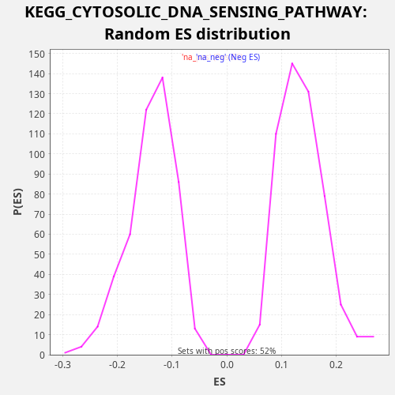

Profile of the Running ES Score & Positions of GeneSet Members on the Rank Ordered List
The same image in compressed SVG format
| Dataset | LabCL |
| Phenotype | NoPhenotypeAvailable |
| Upregulated in class | na_pos |
| GeneSet | KEGG_CYTOSOLIC_DNA_SENSING_PATHWAY |
| Enrichment Score (ES) | 0.33414572 |
| Normalized Enrichment Score (NES) | 2.4401243 |
| Nominal p-value | 0.0 |
| FDR q-value | 0.0053182417 |
| FWER p-Value | 0.022 |
| SYMBOL | RANK IN GENE LIST | RANK METRIC SCORE | RUNNING ES | CORE ENRICHMENT | |
|---|---|---|---|---|---|
| 1 | CCL5 | 76 | 84.339 | 0.0246 | Yes |
| 2 | IL6 | 234 | 27.409 | 0.0459 | Yes |
| 3 | ADAR | 362 | 17.267 | 0.0685 | Yes |
| 4 | IRF7 | 392 | 15.987 | 0.0950 | Yes |
| 5 | IFNB1 | 606 | 9.116 | 0.1140 | Yes |
| 6 | POLR3K | 614 | 8.933 | 0.1415 | Yes |
| 7 | CXCL10 | 1096 | 3.825 | 0.1494 | Yes |
| 8 | RELA | 1345 | 2.608 | 0.1670 | Yes |
| 9 | RIPK1 | 1550 | 2.028 | 0.1863 | Yes |
| 10 | CASP1 | 1561 | 1.991 | 0.2137 | Yes |
| 11 | IKBKB | 1667 | 1.739 | 0.2371 | Yes |
| 12 | TBK1 | 1673 | 1.730 | 0.2647 | Yes |
| 13 | IKBKG | 1957 | 1.270 | 0.2808 | Yes |
| 14 | ZBP1 | 2229 | 0.975 | 0.2973 | Yes |
| 15 | NFKBIB | 2267 | 0.936 | 0.3236 | Yes |
| 16 | NFKBIA | 3084 | 0.466 | 0.3177 | Yes |
| 17 | IRF3 | 3505 | 0.334 | 0.3281 | Yes |
| 18 | AIM2 | 4032 | 0.227 | 0.3341 | Yes |
| 19 | POLR3G | 4865 | 0.125 | 0.3276 | No |
| 20 | IKBKE | 6535 | 0.035 | 0.2864 | No |
| 21 | POLR1D | 6635 | 0.032 | 0.3101 | No |
| 22 | POLR3C | 6977 | 0.023 | 0.3238 | No |
| 23 | POLR3H | 7684 | 0.011 | 0.3224 | No |
| 24 | NFKB1 | 8863 | 0.002 | 0.3015 | No |
| 25 | PYCARD | 9081 | 0.001 | 0.3203 | No |
| 26 | CHUK | 12549 | -0.012 | 0.2049 | No |
| 27 | POLR3GL | 12685 | -0.013 | 0.2271 | No |
| 28 | POLR3D | 14267 | -0.042 | 0.1895 | No |
| 29 | RIPK3 | 15473 | -0.082 | 0.1675 | No |
| 30 | POLR1C | 15711 | -0.092 | 0.1855 | No |
| 31 | POLR3B | 17431 | -0.205 | 0.1423 | No |
| 32 | IL1B | 19910 | -0.635 | 0.0677 | No |
| 33 | MAVS | 20934 | -1.099 | 0.0532 | No |
| 34 | POLR3A | 21276 | -1.314 | 0.0669 | No |
| 35 | IL18 | 22726 | -4.475 | 0.0348 | No |
| 36 | POLR3F | 22808 | -4.930 | 0.0593 | No |

{kind=link}
{kind=link}